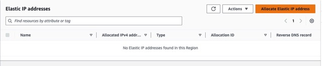

Find and Deploy a AI Chat to the Cloud
Overview
In this scenario, you were recently hired by a small startup company that for privacy and cybersecurity reasons, they want you to build an AI Chat in the Cloud.
Business Requirements
- AI Chat Privacy
Project Requirements
- Find and deploy an AI chat to the cloud (ex: ollama) for the company to use internally without sending any information to 3rd parties
- Use enough resources for it to run well - it doesn’t need to scale automatically
- It does need to be able to manually be scaled up
- Use AWS (Amazon Web Services) if possible
- Use an ollama model that will fit on a server with less than 32 GB of storage space
Table of Contents
Project Instructions
Setting up and logging in to your AWS Academy account
Your instructor will create an AWS Academy course that will be used to create sandbox accounts for you as a student. This sandbox account will be an AWS account with a $50 credit assigned to you. There are no requirements for you to purchase or provision any account from AWS. You will not be required to spend any money or provide credit card information.
Your instructor has created a user account in the AWS Academy course for you. As part of the course creation, you will receive an email invitation to join the course. Please note AWS Academy uses Canvas like I-Learn; however, this is not the same Canvas account as BYUI. You will be creating new credentials in AWS Academy with your byui.edu email address. If you have previously created an AWS Academy account, you will use those AWS Academy credentials and can skip to step 3 of this section.
To set up your AWS Academy account, open your email invitation from AWS Academy (notifications@instructure.com) and click Get Started.
Note: If you don’t see the email, check your junk, spam, or promotional mail folder.
After clicking the Get Started button, you will be redirected to a web page for creating an account or login using existing AWS Academy credentials. Please note that while the email being used is your byui.edu email, this is not your byui.edu password. You should not use the same password for AWS Academy as your byui.edu I-Learn account. AWS Academy does not utilize single sign-on services and is an entirely separate service and account from byui.edu. Unless you already have an AWS Academy account, select Create My Account. If you already have an AWS Academy account, select the I Have a Canvas Account option and use your AWS Academy credentials to login and accept the invitation to this course. Also, note the AWS Academy Learner Lab number will be different for your course than the [36035] shown below. This is NOT your I-Learn credentials. They are separate accounts.
After creating credentials, choose Student Login in the future and log in with your email address and password at https://awsacademy.instructure.com

Connecting to AWS Learner Lab
From the LMS dashboard, choose the BYUI AWS Academy Learning Lab for the class you are accessing. Your instructor will provide a 5 digits identifier for your course to access the learner lab sandbox for your given class. Note: If you have been invited to more than one course or Lab, you will see multiple tiles on the dashboard.

In the navigation menu, choose Modules.

Choose the Learner Lab link.

Click Start Lab (arrow #1) and wait for the circle (arrow #2) to turn from yellow to green.

Once the circle is green, click AWS (arrow #2 above) and it will open a new window.
AWS EC2 (Amazon Web Services Elastic Cloud Compute)
- AWS offers many free resources to host your own website: Check out AWS Free Web Apps.
AWS (Amazon Web Service) has EC2, the main way to deploy a server with an operating system such as Linux.
When in your AWS console, search EC2 in the search bar and click EC2.
Click Launch Instance.

Pick a name for the server like AI Chat.
Click on Amazon Linux and 64-bit (x86).
Pick how much processing power and RAM you want. We will use a t2.large. Click the drop down and search for t2.large.

The larger the instance type, the more it costs per hour. You will want to turn this one off if you are not using it. After 4 hours your learner lab will turn off all your servers automatically, but in a normal AWS account it would not turn off unless you turn it off manually.
Click Create New Key Pair. This is the security key you need to connect to the server. It is like a password file. You download it to your computer to use it to connect to the server.
Name the key and keep the settings at their default (RSA key pair type, and .pem key file format).

Click Create Key Pair and this will download it to your computer. Make sure to save this in a place where you will remember where it is.
Select the ports that you want open to be able to access the server (e.g port 22 (selected by default) to ssh or connect into the server).
Leave the box checked for port SSH from anywhere.
Check the boxes for HTTPS and HTTP.
Add more security ports.
Click 'Edit' in the top right.
Add security group rules.
Click the "Add security group rule" button.
Add port 3000 that we will use for the web interface of the Chat AI (click 'Edit' in the top right).
Add cidr for the source of 0.0.0.0 (means allow traffic from anywhere on the internet).
- Also, add port 11434 with CIDR of 0.0.0.0 for ollama.
- Make sure you have 5 ports listed 3000 (AI website), 11434 (internal AI), 22 (ssh), 443 (https), 80 (http). They all should have CIDR of 0.0.0.0. If not add them.
Pick how much hard drive space you need on the server. Put 32 GB.
Click the Launch Instance button
Add Elastic IP (Makes the server have the same IP address to connect to it again)
Click on "Elastic IPs" in the AWS EC2 dashboard on the left side.
Click the "Allocate Elastic IP address" button.
Keep the Amazon pool of IPV4 addresses selected.
Click the "Allocate" button on the bottom right.
Check the box for the new allocated IP.
Click "Actions" > "Associate Elastic IP address".

Find and select the "Instance" in the search bar and click "Associate".
Connecting to the Server
Click Click on Instances on the left side bar.
Click on the ID of your instance (the long number).
Click the Connect button.
Click on the "EC2 Instance Connect" tab if it is not selected.
Scroll down and click the orange "Connect" button on the bottom right.
Alternatively, on your laptop, directly, you could use PowerShell or the terminal to ssh in with the key you downloaded earlier. You would need to find the public IP of your EC2 instance in the details page under instances in the EC2 dashboard and run the following command (replace 3.3.3.3 with your public IPV4 address):
In your terminal or PowerShell on your laptop (not the browser connect option above), you need to be in the folder of your .pem file you downloaded.
Change the permission of the .pem file:
chmod 400 'yourkey.pem'
Connect to the server with your .pem file (acts as the password) and the default AWS username of 'ec2-user'.
ssh -i yourkey.pem ec2-user@3.3.3.3
Use either the Public IPv4 Address for your instance or the longer compute-1.amazonaws.com given in the connect tab.
Run Security Updates (OPTIONAL - REAL WORLD HIGHLY RECOMMENDED)
Make sure to update the instance often. Connect either in the browser connecting to the terminal with "Connect" buttons or ssh in via the pem key.
This gets and applies the security updates for the software and services that need updates.
sudo yum update
This reboots/restarts the server (Only need to do this on kernel or Major OS updates).
sudo reboot
Reconnect with the steps above after about a minute for the reboot.
Install ollama (a free Chat AI)
curl -fsSL https://ollama.com/install.sh | sh
ollama pull llama3.2
ollama run llama3.2
Now when you connect to the server later, you only need to run the last command to start ollama.
Ask the AI a question such as: What is the cloud?
Ask this custom, private, AI something else?
Type "/bye" to exit
Add Web Interface for Custom AI Chat
#Installs and starts docker (we will learn more about docker later)
sudo yum install docker
sudo systemctl enable docker
sudo service docker start
#Get the docker for Custom Web AI Chat (Open Web AI - a website for your own custom AI chat)
sudo docker run -d -p 3000:8080 --add-host=host.docker.internal:host-gateway -v open-webui:/app/backend/data --name open-webui --restart always ghcr.io/open-webui/open-webui:main
-
Run the following commands one at a time (or skip to the shortcut script below).
sudo vi /etc/systemd/system/ollama.service
#Use the 'J' on your keyboard to move down to right below the 'Environment' setting
#You can either try to paste the line below or type 'I' to enter insert mode and type it instead
#Add the two lines below the current Environment in addition to the existing one
#(replace 35.67.76.43 with your elastic ip)
Environment="OLLAMA_HOST=0.0.0.0"
Environment="OLLAMA_ORIGINS=35.67.76.43:*"
#Exit vi by hitting your ESC key, then type ':wq'
#Run the following commands one at a time (if you get an error, continue):
sudo systemctl daemon-reload
sudo systemctl restart ollama
Go to step 4.
SHORTCUT SCRIPT - TO THE VI STUFF ABOVE (Don't do this if you did step 3 above)
If step 3 didn't work,run this in the connected EC2 instance shell:
curl -O https://byui-cloud.github.io/itm101-course/week07/addipvarwebui.sh && sudo chmod a+x addipvarwebui.sh && sudo ./addipvarwebui.shOr if that script didn't work, TRY THIS:
sudo sed -i '/RestartSec=3/a'$"Environment=\"OLLAMA_HOST=0.0.0.0\"\nEnvironment=\"OLLAMA_ORIGINS=$(curl -s http://checkip.amazonaws.com):*\"" /etc/systemd/system/ollama.service #Run the following commands one at a time (if you get an error, continue): sudo systemctl daemon-reload sudo systemctl restart ollama Check the file of the ollama service:
sudo cat /etc/systemd/system/ollama.service
#Do you see these three lines (but with your elastic IP):
Environment="OLLAMA_HOST=0.0.0.0" Environment="OLLAMA_ORIGINS=3.210.150.106:*" Environment="PATH=/usr/local/sbin:/usr/local/bin:/usr/sbin:/usr/bin"
If not, fix it with the vi steps above (press 'dd' to delete a line if needed).
Open your browser to the Elastic IP address you were give in that Elastic IP step above.
Make sure to put http:// and NOT https://
Example: http://35.67.76.43:3000 (replace 35.67.76.43 with your elastic ip)
Sign up for a new account
If you get this far, Great JOB!
Try the AI Chat - Click "New Chat" in the top left.
Troubleshooting & Common Problems
If you can't access AWS
Find the email invite that was sent to your BYU-I email address that ends in @byui.edu
You can't see the EC2 instance?
Are you in the correct region? Did you click on the top right corner of AWS to connect to the N. Virginia or Oregon region, depending on where you deployed it.
You can't see or use the web interface?
Did you open both port 3000 and port 11434? Check your instance security group inbound rules.
Model Not Selected Error on browser
Go to the admin panel > Settings > Connections > Click on the refresh circle arrows.
Did you set the default user model in the Admin Panel settings under Users?
Did you download the 'llama3.2' model in the Admin Panel settings under Models?
WebUI could not connect to Ollama
#Check the file of the ollama service:
sudo cat /etc/systemd/system/ollama.service
#Do you see these three lines (but with your elastic IP):
Environment="OLLAMA_HOST=0.0.0.0" Environment="OLLAMA_ORIGINS=3.210.150.106:*" Environment="PATH=/usr/local/sbin:/usr/local/bin:/usr/sbin:/usr/bin"
If you don't see those three lines, run this and then go refresh the connection in the admin panel settings:
curl -O https://byui-cloud.github.io/itm101-course/week07/addipvarwebui.sh && sudo chmod a+x addipvarwebui.sh && sudo ./addipvarwebui.sh
Learning More
Want to learn more about AWS and obtain an AWS certification? Take ITM300 Cloud Foundations.
Build your resume: Deployed a Custom Chat AI to an AWS EC2 instance.
Build your resume (possible FUTURE project): Deployed a Custom Chat AI with custom RAG and connected it to an RDS database with Cognito authentication
Learning More - Create Customized Default Prompts
Create custom prompts that show up for the user - look at the 'interface' tab in the admin panel.
Allow users to have the 'user' role instead of 'pending' for new signups.
Look at https://openwebui.com and try importing models and/or prompts.
Check out the Mental Health Assistant on openwebui.com, import it, and test it.
Learning More - Learn About RAG with AI
RAG - Have AI use external documents and data